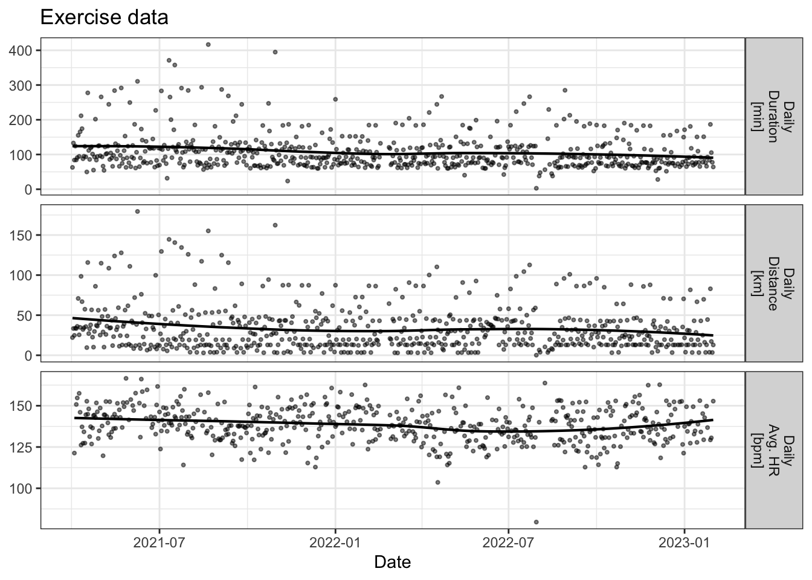

| Exercise Metric | Value |
|---|---|
| Duration [min] | 108.35 |
| Distance [km] | 33.42 |
| Average HR [bpm] | 138.38 |
Physiology Journal Intro
A study of my personal health and exercise data
Health and wellness tracking has increased substantially over the years. I wanted to do a demonstration of some insights that I can gain from my own personal data.
Why?
While wearables are fairly ubiquitous, many individuals are using them speculatively. I often hear from people using devices that track health and sleep something to the effect of: “I notice than that when I do [some habit], I see a big change in [some sleep/health metric].”
This is great to hear, as many people are getting inspired to correlate habits with health, but the process could be improved. The most important parts of this are:
1. Being able to use data to back up these claims and control for other occurrences.
2. Being able to quantify how much something is impacted and if it is meaningful (both clinically and statistically).
The data
There were two main sources of data, dating from April 14, 2021 to January 31, 2023:
- Physiological: Sleep session only physiological parameters (i.e. sleep average HRV, amount of deep sleep, etc.)
- Exercise: All of my swims, bike rides, and runs were recorded using one of three GPS-based devices and then aggregated through Strava, Golden Cheetah, and some custom Python scripts to process the activities the way I wanted. It is important to note that all other physical activity was not included, which means things like dog walks (~3/day), errands, standing at my standing desk, etc., which should not be discredited.
This is meant to be a representative, feasible approach, which replicates data that would be relatively easy to collect via APIs in a central app. More data could be had, but would require more user-related input and thus, less overall compliance. A short period was used to address some of these short-comings, and more studies will be done to address even more short-comings.
Journal Subset
For a period of 72 days, I kept a journal, with the goal to see how much information a quick (< 1 min. to complete) questionnaire could add to contextualize more of the data.
These questions included questions about:
- the amount and timing of coffee, alcohol, and sex
- the nature of snacking before bed
- feedback about how my workouts felt
- nutrition quality/quantity and supplements
- other miscellaneous tags (COVID, illness, injury, travel, conflict, etc.)
Profile
There will be many posts to follow, but for now, I wanted to set the stage of what the data looks like.
Daily Exercise Averages over the entire period
Nightly Biostrap Averages over the entire period
| Biostrap Variable | Value |
|---|---|
| Sleep Score [A.U.] | 79.84 |
| Total Sleep [min] | 440.38 |
| Efficiency [%] | 91.81 |
| HRV (Sleep Avg. [ms]) | 90.95 |
| HR (Sleep Avg. [bpm]) | 50.21 |
| Lf/Hf (Sleep Avg. [A.U.]) | 1.12 |
Longitudinal Data
